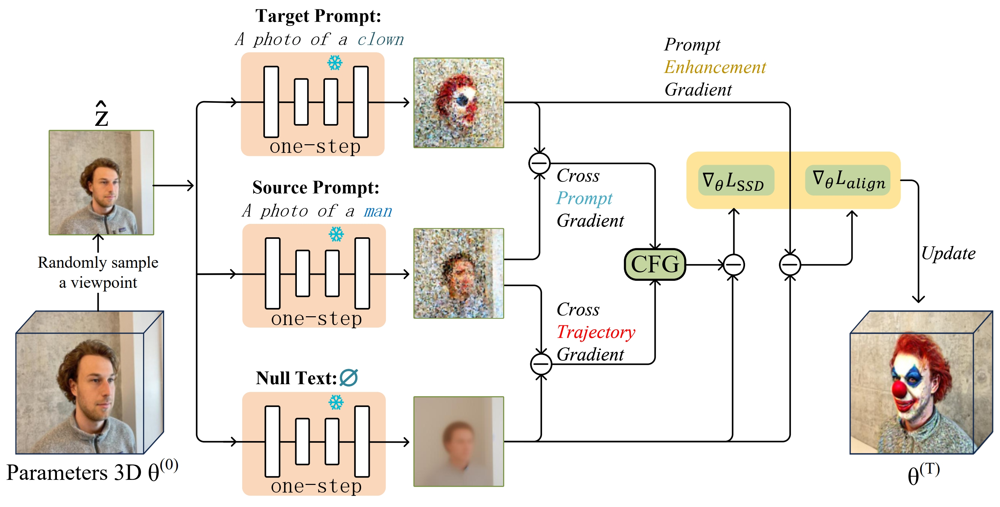

Haiming (Alex) Zhu朱海明 |
 |
Biography
Hi, I’m Haiming Zhu. I am currently a Research Assistant at SUTD, working with Prof. Na Zhao. My research interests lie in Neural Radiance Fields (NeRFs) and Generative Models. More recently, I have been exploring Embodied AI, with a focus on hand–object interaction (HOI).
Previously, I worked on video, image, and 3D scene editing by leveraging diffusion model priors with Prof. Shengfeng He and Prof. Yangyang Xu. I received my Master’s degree from Tsinghua University (SIGS) advised by Prof. Xiang Qian.
I am always open to new opportunities and collaborations. Feel free to contact me!
News
- 09/2025: One paper accepted at IJCV.
- 06/2025: One first-author paper accepted at ICCV 2025: Stable Score Distillation.
Publications

|
Invert Your Prompt: Editing-Aware Diffusion Inversion Yangyang Xu, Wenqi Shao, Yong Du, Haiming Zhu, Yang Zhou, Jiayuan Xie, Ping Luo and Shengfeng He IJCV 2025 PDF / Supp / Code |
|
 |
Stable Score Distillation Haiming Zhu, Yangyang Xu, Chenshu Xu, Tingrui Shen, Wenxi Liu, Yong Du, Jun Yu, and Shengfeng He ICCV 2025 PDF / Supp / Project |
Education
- M.S., SIGS, Tsinghua University, 2021–2024
- B.S., Jiangxi University of Finance and Economics, 2017–2021
© Haiming Zhu | Last updated: September, 2025.
This website template is borrowed from Yangyang Xu. Thanks!
This website template is borrowed from Yangyang Xu. Thanks!